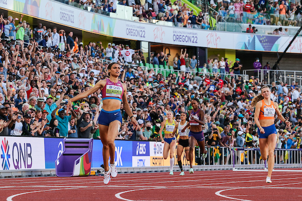

Women's 400mh Line up
September 30, 2022 by Fitzdain Dinham
 These 2022 World Championships have provided exciting competitions on the track and on the field on a daily basis. But many track & field buffs have had this Day Eight circled on their calendars for a while. They have waited for the women’s 400-meter hurdles final. It has been seen as a terrific rematch among the top three Tokyo Olympic medalists: The Netherlands Olympic bronze medalist Femke Bol; USA’s Olympic silver medalist Dalilah Muhammad; and USA’s Olympic gold medalist and world record-holder Sydney McLaughlin. As the Eugene global gathering approached, many sensed that such a final would be a hard-fought, tooth-and-nail battle for the gold medal in these World Championships. But Sydney McLaughlin saw it differently.
Without any surprises, Syndey Mclaughlin won the women's 400mh hurdles finals in a new world record time of 50.6 seconds. She lead from the start and demolosh both her opponents ans her own previous world record. For the year of 2022, every time Sydney Mclaughlin stood on the track she got faster and fatser. The new world is not a suprise for the persons who were following her progression but it can be argued that many did expect her to go that fast. I had her peaking at 50.9 seconds but she went above my expectations. Sydney Mclaughlin is seting up herself to be on the all time greats in Tracka and Field.